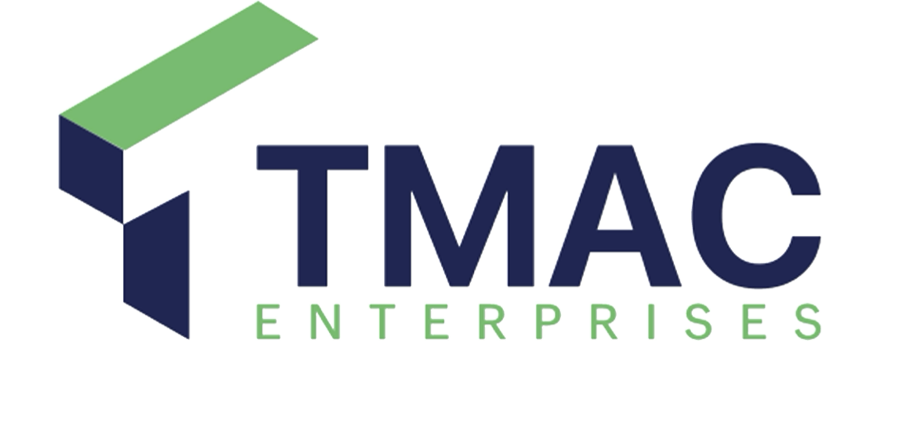

Reliable Equipment
Machines selected for tough site conditions, daily productivity, and dependable project delivery.

Yellow Machine Hire | Civil Works | Earthmoving
Dependable machinery and practical site support for construction, earthmoving, and civil works projects.
"x10 TIMES USEBENZILE SAKHANYA"
About TMAC
TMAC Projects & Civil Works provides yellow machine hire and civil works support for construction sites, development projects, roadworks, land preparation, and general earthmoving needs. The company focuses on dependable service, practical solutions, and equipment that helps clients get the job done faster and better.
From machine hire to full site support, TMAC is ready to work. Learn MoreMachines selected for tough site conditions, daily productivity, and dependable project delivery.
Hands on operators and support crews who understand site flow, safety, and efficient earthmoving.
Practical coordination for civil works, site preparation, and construction support from day one.
Our Services
Hire the right machine for earthworks, loading, clearing, roadworks, and construction tasks.
Support for infrastructure, drainage, access works, platforms, and general civil site needs.
Cut, fill, move, and shape soil or material to prepare sites for construction activity.
Clear vegetation, rubble, loose material, and obstructions before construction begins.
Excavation support for trenches, foundations, services, drainage, and bulk earthworks.
Machine and site support for road preparation, grading, compaction, and maintenance works.
Trench preparation for pipes, cables, water lines, drainage, and service installations.
Load, move, stockpile, and distribute material across active construction environments.
Prepare land, access routes, working platforms, and site surfaces for the next trade.
Flexible support for builders, developers, contractors, and project managers on site.
Fleet Hire
Machine availability can be confirmed when requesting a quote.
Ideal for trenching, loading, backfilling, and compact site works.
Used for deep digging, bulk excavation, foundations, and drainage works.
Strong for loading, stockpiling, spreading, and material handling.
Supports road shaping, surface preparation, and level finishing.
Used for compaction on roads, platforms, trenches, and layer works.
Moves sand, stone, spoil, rubble, and bulk material to or from site.
Provides water supply for compaction, dust control, and site support.
Built for pushing, clearing, leveling, and heavy site preparation.
Why TMAC
A practical construction partner for clients who need machines, people, and project support that can move with the job.
Process
Share the site, project type, date, and work required.
TMAC helps match the job to the correct machine or team.
Receive pricing with the scope, hire option, and expected timing.
Equipment and support are scheduled for the confirmed site.
The team gets to work with practical, site-ready coordination.
Project Types
Request a Quote
Tell us what you need, where the site is, and when the work should start. TMAC Projects & Civil Works will help you choose the right machine or service for the job.
Contact
Send a quick enquiry for plant hire, civil works, site clearing, roadworks support, or general construction support.